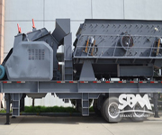

portable impact crusher
 Mobile crusher station using the latest manufacturing technology, high-quality high chromium plate hammer, wear-resisting lining counterattack, broken than large, plus the crusher's refined grain quality characteristics, so that the set of Mobile has wider application unit of crushing equipment.what's more,portable impact crusher compared with portableconvenience, covers an area of small, can be directly selected site, placed in the field can be put into production
Portable Impact Crusher Features
- good mobility, fine flexibility, reduce material transportation costs;
- the advantages of compact structure, stable performance, convenient use, simple operation;
- high applicability, the direct and effective work function ;
- high processing capacity, crushing, efficient economy;
- adaptability, flexible configuration, convenient repair.
portable impact crusher production line configuration
The configuration of stone production line are based on the field investigation at the scene or the actual requirements of customers design, fully embodies the rationality, effectiveness, suitability of the design, large capacity, low wear, low operating cost characteristics. Strong technical strength and perfect customer service system are assured to guarantee the purchase and usage. According to different technical requirements, various types of equipment combination, satisfies the customer the different technological requirements.
Portable Crusher Gallery